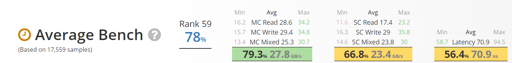
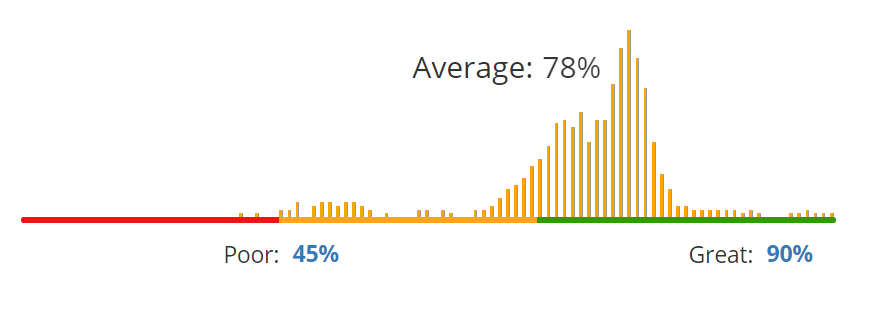

-

$88.99 -
- Specifications
- Manufacturer: Kingston
- Form Factor: 288-pin DIMM
- Modules: 2 x 8GB
- Color: Black / White
- First Word Latency: 13.127 ns
- CAS Latency: 14
- Voltage: 1.2 V
- ECC / Registered: Non-ECC / Unbuffered
- Heat Spreader: Yes
- 
- 
- Features
- - Impact DDR4 is optimised for Intel’s Series 100 and 200 chipsets and has been tested for compatibility with leading motherboard manufacturers.
- - Offers 16GB Capacity (2x8GB).
- - Higher memory bandwidth and 2666MHz to power through all the gaming, video editing and multitasking you can throw at it.
- - Keep ahead of the curve by fully loading up your notebook or smallform-factor machine with HyperX Impact DDR4 SODIMM.
- - The sleek black PCB and slim thermal label will give your build an edge in style, and Impact DDR4 is backed by lifetime warranty.